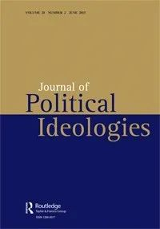

收录于合集

作品简介
【作者】 Roman Vater， 牛津大学希伯来和犹太研究中心。
【编译】 朱文菡（国政学人编译员，伦敦大学亚非学院）
【校对】 李雯珲
【排版】 杨洋
【来源】
Vater,R. (2016) Beyond bi-nationalism? The Young Hebrews versus the ‘Palestinian issue’. Journal of Political Ideologies, 21 (1), 45-60.
期刊介绍
《政治意识形态学刊》（Journal of Political Ideologies）是一份同行评议学术期刊，由迈克尔∙弗里登（Michael Freeden）于1996年创办发行，内容关注政治意识形态分析。
超越“双民族方案”？希伯来青年运动与“巴勒斯坦人问题”
Beyond bi-nationalism? The Young Hebrews versus the ‘Palestinian issue’
Roman Vater
编者按
“世纪协议”排挤“两国方案”之际，不再面临亡国危机的以色列人却陷入身份认同困境，即以色列赖以建国守业的锡安主义应何去何从？本文展现了以色列历史上一种试图将巴勒斯坦阿拉伯人同化为一个新的希伯来民族的迦南主义方案，对反思巴以关系和现代民族国家体系或有助益，也请读者辩证看待。
内容提要
旨在解决巴以冲突的“双民族（bi- national）方案”几乎和“锡安主义”（Zionism，又称“犹太复国主义”）的历史一样长。这一方案试图使具有各自身份认同的犹太人和巴勒斯坦人共享一个政体。希伯来青年运动（the Young Hebrews movement）反对认为这些身份认同属于不同民族（national）的范式，而主张二者可以共生于一个希伯来民族（Hebrew nation）。本文认为希伯来青年运动对“巴勒斯坦人问题”的解决方案企图挑战“锡安主义”在以色列的话语霸权，从而为中东地区更为激进的地缘政治重整另辟蹊径。
文章导读
关于犹太巴勒斯坦移民和当地阿拉伯人之间的关系问题，几乎从锡安主义运动诞生之日起就始终纠缠着它。尽管锡安主义思想家们对于宣称对他人居住地拥有所属权并无道义和政治合法性上的异议，但他们在具体实施方案上的分歧却成了锡安主义政治和以色列政治中划分“左”“右”的界线。一些团体如Brit Shalom 及其继任者呼吁建立一个双民族政体（a bi-national polity）的和解方案，这要求犹太人放弃其自决权。另一些人主要是修正主义者（the radical Maximalist Revisionists）则倡导激进的沙文主义，呼吁按照圣经订立的土地之约（the lands of the Biblical covenant）建立一个犹太王国并驱逐阿拉伯居民。在这两种极端中间存在一个现实方案：锡安主义的现实政治（real-politic）。无论是赞成Brit Shalom的调解立场还是极右翼的好战态度，这些观点都承认阿拉伯巴勒斯坦民族主义与犹太人的政治愿望不可兼容。Zeev Jabotinsky于1924年发表的著名文章《在铁墙上》（On the Iron Wall）明确承认，巴勒斯坦阿拉伯人构成一个有正当愿景的合格民族（a fully-fledged nation with legitimate aspirations），不可能长期被收买屈服。而以下分析将展示解决“巴勒斯坦人问题”的另一种方案，这种方案通常在有关锡安主义与巴勒斯坦人关系的讨论中被忽略。 从1930年代末到1970年代，活跃于这一地带的希伯来青年运动（通常也称为“迦南主义”）挑战了锡安主义者原本对单独的阿拉伯巴勒斯坦人身份界定的原则，而主张在巴勒斯坦形成一个包含当地阿拉伯人的新的希伯来民族，这样犹太人和阿拉伯巴勒斯坦人的两种身份认同就会被一个现代的进步的希伯来民族身份所取代。希伯来青年运动希望藉此建立一个基于古希伯来遗产的新的自由主义民族政体。因此，巴勒斯坦阿拉伯人被同化入希伯来社会和文化就成为重构二者的一部分。 在分析希伯来青年运动就“巴勒斯坦人问题”提出的解决方案的方法论上，本文将首先概述其意识形态。随后，本文将以对于希伯来人、犹太人和巴勒斯坦人关系发展至关重要的三个事件作为讨论的基础：以色列独立战争和1948年巴勒斯坦难民问题的产生；1967年六日战争及将大量巴勒斯坦人纳入以色列势力范围；1987年爆发的巴勒斯坦民族起义（Intifada）及随后签订的《奥斯陆协议》（Oslo accords）。本文将追溯希伯来青年运动的地缘政治思想发展，并研究其演变过程，随后就其提议的以色列社会改革方案的成功几率和对以色列当前政治议题的潜在影响得出结论。
一、 希伯来青年运动的意识形态
在1930年代末，两大原因推动了“迦南主义（Canaanism）”的产生：一是依舒夫（Yishuv，即在以色列建国前定居巴勒斯坦的犹太居民）民族身份的逐渐生成；二是历史学家、语言学家Adya Gur Horon和诗人、政治思想家、激进主义者Uriel Shelah（笔名Yonatan Ratosh）对身份认同和历史的沉思。这两人都属于锡安主义的修正主义派；因此，他们的思想受到政治自由主义传统的熏陶，并在分析了古希伯来文化和犹太教历史发展以及中东和巴勒斯坦委任统治地（mandatory Palestine）的政治状况之后，一致认为锡安主义思想不足以应对彼时的现实情况。他们对锡安主义的批判基于一个实证主义前提：现代希伯来人的身份是足够自信和自然的，不需要一种意识形态来为其申辩（并因此暗中质疑其存在），而在圣经中被视为异教并为锡安主义所忽视的古希伯来文化，在1929年后叙利亚西北部古迦南城市Ugarit的考古发现中尽展光华。其中包括展示迦南历史的文本，这些文本早于圣经，但在语言和风格上都与圣经惊人地相似。Adya Horon利用这些考古发现提出了希伯来古代历史的另一种版本，该版本与犹太锡安主义者对希伯来历史的理解相反。这个版本最终成为希伯来青年运动关于民族传说的现成基础。Horon和Ratosh随之得出结论：服务于锡安主义和泛阿拉伯主义的传说并不真的是民族的。因此，他们声称犹太人和阿拉伯人不是现代民族（modern nations），而是前现代的民族宗教社群（pre-modern ethno-religious communities），犹太人和阿拉伯人对民族独立的主张是有误的。“迦南主义者（Canaanite）”对民族主义的概念化过程强调“现代性”与“落后性”的区别。锡安主义者以僵化固定的方式，将犹太性（Jewishness）定义为由原始和永恒血缘建立的单一命运共同体，但希伯来青年运动倾向于更为灵活的民族（nationality）观念。他们化用了所谓的“环境决定论”，这种观念认为无论个人还是集体的身份认同都是由居住地的地球物理现实塑造的。成为某地的“当地人”意味着与此地居民共享宇宙学（cosmology）意义上的共同点；又因为这种宇宙学意义上的共同点是可以通过社会化或同化达成的，所以生物意义上的血统就不再重要了。 因此，希伯来青年运动将国家形成（nation-formation）从一个种族生物学上（racial- biological）对民族身份认同（national identity）的概念化过程——这一过程在很大程度上影响了锡安主义者对犹太性的理解，转变为一种纯粹的领土主义方法。 实际上，锡安主义和“迦南主义”在处理古犹太人/希伯来人与其现代“后裔”之间的关系上有根本的不同。由于锡安主义在系谱（genealogical）和文化上大体规定了古代和现代犹太人之间的不间断联系，因此，其民族起源（national origins）传说可被定义为连续性的生物神话（biological myth of continuity）。相反，希伯来青年运动否认系谱传承对国家形成有任何意义，认为现代希伯来人不是古希伯来人的后裔。因此，他们的民族起源传说应被归为文化类似性的意识形态神话（ideological myth of cultural affinity）。这样有意识地以灵感替代血缘述说历史成为希伯来青年运动民族主义的主要特征。 本文指出锡安主义与“迦南主义” 在其知识渊源和对过去、现在和未来的看法上的基本区别，说明二者不仅是相互独立的更是相互敌对的意识形态。 鉴于此，本文不同于现有研究希伯来青年运动的大多数文献。这些文献都将“迦南主义”视为锡安主义某些原则的极端发展：James Diamond认为“迦南主义”试图对早期锡安主义中明显的世俗冲动采取行动。Yaacov Shavit的分析与之类似，但他不仅不在意事实、名字和日期，还表现出对“迦南主义”的敌视。这两项研究显然都从1950年代初文学评论家Baruch Kurzweil的范式中汲取了灵感。Kurzweil认为希伯来青年运动在犹太史上并不代表任何新的品质，只不过是Haskalah（18-19世纪的犹太人启蒙运动）以来又一次对传统犹太价值观的侵蚀罢了。不过他同时也承认该运动“将犹太教的大流散（Galuth）从理论上的否定转变为活生生的现实”，这实际上接受了“迦南主义”是对一种全新社会文化条件的真实表达。因此本文认为将“迦南主义”局限在犹太历史框架进行解释是一种过度简化。遵照“迦南主义”本身的原则重新解释，而非将其视为锡安主义的分支，这样的分析可能更有成效。上述意识形态在民族形成和民族划分上的差异表明，对于非犹太人而言，“迦南主义”比锡安主义更具有包容性和开放性。希伯来青年运动很早即涉及“巴勒斯坦人问题”，甚至可追溯到1948年战争之前Yonatan Ratosh在《开放对话》（Opening Discourse）中的表述。其核心是：
•巴勒斯坦人（编者注：此处的巴勒斯坦人是英国委任统治下的巴勒斯坦人，不全然等同于巴勒斯坦阿拉伯人）是古希伯来人后裔。
•因此，巴勒斯坦民族身份认同应置于现代希伯来民族的框架之中。
•巴勒斯坦人当前徘徊在原始的前民族的（pre-national）社会发展阶段。
•在当时，巴勒斯坦人的组织是消极的（反依舒夫的），受到英国人的操纵。
•如果锡安主义者继续滥用民族主义论调，巴勒斯坦人可能效仿其民族主义论调而非加入依舒夫（Yishuv）的建国事业，致使其站在锡安主义者的对立面。
•假定的巴勒斯坦民族身份既没有固有的积极特性，也没有历史基础，这就导致巴勒斯坦人既可能成为希伯来人，也可能成为泛阿拉伯主义的代理人。
现在，让我们遵循这些原则在巴以冲突进程中的实际应用，并评估希伯来青年运动的立场在1948年至1987年之间的变化。
二 、1948年——“那些关于德国的电影”
1948年的以色列独立战争对希伯来青年运动打击很大：他们反对战争并谴责其结果。国外的锡安主义精英在1949年停火线内建立了以色列，但这个国界线没有满足以色列希伯来人地缘政治观所期望的整个“东方之地”（Land of Kedem，希伯来青年运动所使用的地理历史和地缘政治术语，指的是希伯来人家国的“真正”国界。它大致与“ Mashriq”或“ Levant”这样的地理历史术语相对应，包括今以色列、黎巴嫩、叙利亚、伊拉克和约旦。“ Kedem”在希伯来语中有多个含义，包括“古代”“东方”和“前线”）。迦南主义者认为，以色列进行的并非希伯来民族解放战争，而是基于民族宗教社群观的犹太排外政策。战后，希伯来青年运动成为1948年那批战士排解挫败感的工具，他们认为其在战场上的牺牲被锡安主义“占领者们”玷污了。希伯来青年运动用1948年战争对巴勒斯坦人命运的影响，来攻击大卫·本·古里安的政府和整个锡安主义组织。战争对巴勒斯坦社会本身的破坏性影响微不足道，这可能解释了希伯来青年运动在战时及其后出版的作品对难民困境的矛盾态度。因此，他们认为难民问题的出现是战争的自然结果，以色列对此没有道义上的责任，甚至表示这可能给以色列带来积极的影响。Rotash在1948年11月写道：
“阿拉伯人撤离”最初是计划外的……毫无疑问，无论是军事还是其他方面，都有所收获……在以色列边界以外的居民中，一种信念扎根于我们驻足的地方——他们注定要在战火、武器和饥饿中放弃这片土地。
一年后，他写道：“许多难民不会再回来了。乾坤已定，历史的车轮不会倒转。”然而，先前的表述也暗示了相反的可能。因为说“许多难民不会再回来了”本就意味着有些人可能会返回，并且事实也确实如此，承认1967年以后的巴勒斯坦人返回权（the Palestinian Right of Return）（尽管是以某种“迦南主义者”的方式）是希伯来青年运动的地缘政治支柱之一。他们承认巴勒斯坦人大规模放弃自己的家园或许有利于以色列，并将其归咎于锡安主义的流亡心态。以色列领导层并不希望成为该地区的民族解放先锋，因此只能解释为按照流离失所者的自我孤立原则使其将潜在的盟友视为敌人。此外，在战争后期，当以色列精心策划驱逐巴勒斯坦人时，希伯来青年运动公开反对以色列官方对阿拉伯人的指责。强烈谴责对巴勒斯坦人的剥夺，有时甚至和解释其好处出现在同一文本中：战前，我们常谈论和平。关于“民族间手足情（brotherhood of nations）”……这一切都成为谎言……权力假人之名自称外来的定居力量，即为定居实施占领、驱逐和清除——如此一个排外的孤立主义种族主义社群；……问题是我们是否要赎回我们的土地……——这会导致希伯来人战争……或者我们也可以切割这片土地的一部分……来处置现在的居民，这样就可以驱逐他们……并夺走他们的房屋和全部财产。因为这是犹太人的战争。因此，希伯来青年运动似乎能接受巴勒斯坦难民逃亡作为战争的结果，但不能容忍在战后对其直接进行剥夺的政策。Ratosh的同事Aharon Amir在1950年发表的一篇文章中谴责了驱逐政策：最初人们说：没有规定……仍不清楚应如何对待“他们”……但是现在有规定了……很明显就是赶走他们！……而且这条规矩……已被正式接受……这是一项根植于犹太人内心的政策。在同年发表的另一篇文章中，Amir甚至将1948年巴勒斯坦人的灾难描述为“大屠杀”。他在1949年10月发表的短篇小说《新晨》（The New Morning）中有意识地回顾了大屠杀。在故事中，一名士兵在执行“清理”一个巴勒斯坦村庄的任务后，对他的军官说，他们刚刚做的事使他想起了“那些关于德国人的电影”。《新晨》并不是“迦南主义者”批评该政策的唯一文学作品。Shraga Gafni（笔名Eitan Notev）的《赞美主》（Praise the Lord）提到了以色列军队在按计划驱逐巴勒斯坦人后对其进行了屠杀。有趣的是，这些故事并没有像S. Izhar的 “Khirbet Khizeh” 那样引起强烈抗议，尽管它们涉及同一主题，甚至可能更过火。这或许是因为希伯来青年运动多被认为是边缘人，而Izhar则是工党运动的核心。希伯来青年运动还触及了1948年后仍留守故土并获得以色列国籍的巴勒斯坦阿拉伯人的问题。这个问题在一个对以色列的社会组成和政策进行批判的大背景下进行讨论；对留守巴勒斯坦人的歧视被描述为一个合乎逻辑却不愿看到的仇外的犹太锡安主义政策，该政策甚至使犹太人在获得主权后仍将自身视为受迫害的社群。例如， Amir在文章中谴责将其他人排除在以色列经济之外的做法，他指出贫瘠的国家需要健康的农业，只有克服对阿拉伯人的偏见并将其完全平等地纳入希伯来社会，才能重振农业。因此，其目标是将阿拉伯人和犹太人融合到讲希伯来语的民族社会中，而不是捍卫阿拉伯人的集体权利。的确，Amir认为一个“政策能将资源纳入锡安主义意识形态中”的极致就是授予说阿拉伯语的人“极不合理的‘少数民族’地位”，从而“制造出根本不存在的‘民族’问题”并“阻碍新民族的形成（the consolidation of a new nationality）”。这些观念仍然符合《开放对话》的原则，即没有一个独立的巴勒斯坦民族与希伯来民族平行存在，并且为了这两个社群的利益应将其纳入以色列社会。根据希伯来青年运动的说法，实现这一目标的最实际方法是：首先，建立希伯来人世俗教育体系，而不是现有的阿拉伯语“单独但平等”的教育，这使阿拉伯人在以色列的地位一直保持不变；第二，根据权利和义务平等原则，取消阿拉伯人免服兵役。希伯来青年运动谴责这一歧视性政策，认为它对以色列本身有害：通过向阿拉伯人明确表示他们不受欢迎，迦南主义者指出以色列实际上是在鼓励他们接受泛阿拉伯人意识形态，并坚决反对锡安主义统治。鉴于上述情况，本研究意外地没有在希伯来青年运动的著作中发现就1948年至1966年强加给以色列阿拉伯公民的军事政权提出抗议，也没有发现通过允许部分难民返回并融入以色列社会来明确要求解决难民问题的呼吁。但是，希伯来青年运动的确表示支持伊克特（Iqrit）和比拉姆（Bir’am）撤离者返回自己村庄的斗争；值得注意的是，这些撤离者是基督教马龙派教徒，而不是穆斯林。Herut MK Eri Jabotinsky（Zeev Jabotinsky的儿子，Adya Horon的密友）也加入了他们的行列，呼吁让这些村民返回家园。
三、 1967年——“沙漠中的集中营”
在六日战争前夕，Ratosh和他的兄弟Uzzi Ornan散发了一本名为《为希伯来和平而战》（A war for Hebrew peace）的宣传册。该宣传册呼吁通过采取与1948年完全不同的策略来避免彼时的“错误”，即为了建立地区联盟并使以色列取得地区霸权，应当以合并和接纳取代驱逐和摧毁：希伯来人的和平并不意味着驱逐我们国家领土上的居民，而是给予它平等的以色列公民地位……我们军队占领的每一块土地，其居民必须以具有平等权利和义务的公民身份纳入国家。不是将难民带给国家，而是将国家带给难民！以色列1967年领土扩张（编者注：该领土非主权领土，而是战后占领领土）之后，这个口号成了希伯来青年运动的集会号召。尽管以色列政治制度试图以各种方式应付“领土”上大量巴勒斯坦人口的存在，但只有希伯来青年运动声称在土地被以色列占领之前对这一问题有明确的解决方案。以色列政府的优柔寡断和锡安主义者转向极右翼意识形态——反映为锡安主义者不愿对该地区开放——在1967年后的希伯来青年运动出版物中都受到谴责。希伯来青年运动认可返回权，但以以色列规定的条件为准。“将国家带给难民”意味着要主动解决难民问题，宣布其为一个完全人道主义领域的以色列内政问题，从而使其去政治化。通过合法吞并所有领土，拆除难民营，逐步扩大其居民的以色列国籍，并引入希伯来人世俗教育体系和义务兵役，将巴勒斯坦人同化（re- nationalization）为希伯来以色列人，这与1948年后以色列境内的德鲁兹人和贝都因人的经历类似：我们被迫与……农民和城市居民，穆斯林和基督教徒……一起生活直到时间尽头。因此，以色列的法律、货币、商业、工业应立即付诸实施。……在一两年内可能会开始动员……实现……普遍的征兵义务，这是以色列最有效的熔炉。最后一句话是理解希伯来青年运动逻辑的关键。他们不只是为了自由理想主义而呼吁将公民权利和政治权利扩展给巴勒斯坦人，而是要在以色列内部进行全面的社会文化革命：……在这个国家的任何一个人都会拒绝宗派、排他、歧视和分裂，这个走向开明和现代的民族国家（national state）……将获得……领导文艺复兴和巩固整个幼发拉底河流域（“东方之地”的别称）的权力……如果以色列不这样做，它将依旧是一个封闭的犹太人居住区，被迫持续不断地交战，被迫依靠陌生人。因此，尽管巴勒斯坦人的“以色列化”表面上受到了他们的欢迎，但只是朝着更高的目标即实现希伯来身份的民族（national）潜力迈出了一步。Aharon Amir通过对亚伯拉罕·林肯（Abraham Lincoln）的解释最生动地表达了这种工具主义方法：这场斗争的首要目标是维护领土的完整性，而不是保留或驱逐阿拉伯人口。如果我们需要在不留一个阿拉伯人的情况下保持领土完整，那我们就会那样做；如果我们需要允许所有阿拉伯人留下来以维持领土完整，那我们就会这样做；如果我们需要允许一些人留下而让其他人离开来维持它，那我们也会这样做。Amir的政治目标很重要，以至于1967年后，他愿意与西岸的右翼宗教定居者合作，以期他们在不知不觉中为犹太人和巴勒斯坦人必将合并成一个希伯来民族的“历史逻辑”服务，尽管这最后是徒劳的。Aharon Amir并不是唯一在1967年战争之后改变观点的希伯来青年运动成员。Ratosh在此期间的一些著作也偏离了希伯来青年运动1948年的立场（包括他自己的立场）。尽管总体概念框架不变（即巴勒斯坦人不是一个民族，必须击败阿拉伯和犹太的伪民族主义，必须建立一个被称为“ Kedem联盟”的希伯来政体），但1967年Ratosh在难民问题上对阿拉伯方面的同情较少，而对以色列更为宽容，接受了以色列右翼的一些主张：有些难民是由于军事需要而撤离领土的……有些难民在阿拉伯化的“军事指挥官”的建议下选择逃跑，是为了在取得阿拉伯化的“胜利”并对“犹太人”大屠杀之后返回……只有一小撮难民是因我们领导的指导原则……即以色列境内没有非犹太人的位置而离开的。因此，Ratosh得出结论：以色列对难民的苦难不承担任何责任，而是应归咎于阿拉伯国家及其国际社会的支持者（UNRWA，联合国设立的专门处理巴勒斯坦难民问题的组织）。他们人为地使难民问题永久存在，是为了维持“阿拉伯化”（Arabized，这是希伯来青年运动使用的又一特殊术语，指被阿拉伯文化和语言同化的希伯来人。最初用希伯来词“arbaim”/单数形式“arbai”指代被动接受阿拉伯身份和文化的人。Rotash使用后缀“i”表示“伪”，因此“arbai”字面意义即“伪阿拉伯人”）国家与锡安主义以色列之间的敌意。只有将问题重新归类为人道主义而不是政治问题，并使难民同化入希伯来社会，才能打破僵局。上述观点的结果是要求以一切必要手段粉碎巴勒斯坦人对以色列统治的任何暴力反抗。在赋予领土居民充分的公民权利之前，Ratosh设想了严格的军事统治，它将与巴勒斯坦解放组织（PLO，以下简称巴解组织）游击队战斗，并将他们“带到一个军事法庭……进行处决。没有上诉权。毫不手软；此外，“任何巴解组织支持者都应被送到沙漠中的集中营”。所有巴解组织支持者都必须被视为敌人，应受到起诉或被允许离开，没有返回的可能。清除这些“煽动分子”后，巴勒斯坦人将非常乐于接受以色列提出的自由。Uzzi Ornan事后承认，上述言论对希伯来青年运动的事业造成的损害大于助益。的确，这使希伯来青年运动的反对者借机指责他们“法西斯主义”和“促进独裁统治”，因为Ratosh呼吁在紧急情况下（如1967年5月至6月的紧急情况）在以色列进行时间有限的军事统治。甚至同情“迦南主义者”的观察家也反对“希伯来化（Hebraizing）”巴勒斯坦人的想法，并承认其中具有强制性，尽管希伯来青年运动从未宣称要以武力实现巴勒斯坦人的同化，而多数批评家也忽视了Ratosh是要求对所有“叛徒”判处死刑是无关歧视的这一事实；或者用他自己的话来说，“也包括犹太人（also for not ‘non- Jews’）”。由于坚信巴勒斯坦领土民族主义是不可能的，希伯来青年运动将巴解组织视为泛阿拉伯主义的先锋，后者利用民族领土主义的言论欺骗西方自由主义者。受过语言学训练的Uzzi Ornan指出西方自由主义者对巴解组织作为民族解放运动的支持源于语言上的误解：他断言，尽管“ wataniyya”（当地爱国主义）和“ qawmiyya”（泛阿拉伯团结主义）都被翻译成“民族主义”，但二者并不相同。他还指出，“ FATAH”（编者注：法塔赫，巴解组织主流派别）这个名称具有传统的伊斯兰含义。巴勒斯坦的斗争被视为“ qawmiyya”的延伸，被认为是20世纪初英国帝国主义者强加给“阿拉伯化”人民的伪意识形态。希伯来青年运动认为，以色列不仅拒绝巴勒斯坦人加入，还主张巴勒斯坦人的利益只能在以色列控制范围之外得到满足，从而成为巴解组织恐怖主义的帮凶。因此，锡安主义的宗派观点再次被证明对以色列人是致命的危险。
四、 1987年——“我的兄弟，朝我扔石头”
到1987年起义爆发前，只有Aharon Amir和Uzzi Ornan继续宣传《开放对话》中规定的原则（Horon和Ratosh分别于1972年和1981年去世；该组织的其他成员，如Evron或Amos Keinan早就转移到以色列的左派阵营）。Amir特别活跃于宣传工作，推广“迦南主义者”对巴勒斯坦人叛乱的看法。在他的分析中，巴勒斯坦人叛乱的爆发是对1967年胜利后希伯来人的警告：以色列缺乏一体化政策将迫使巴勒斯坦阿拉伯人走向暴力（伪）民族主义。Amir用诗句般的语言“我愤怒的兄弟，用石头砸向我的庙宇”，来试图说服叛乱的巴勒斯坦人，他们唯一的希望在于破除对“泛阿拉伯主义”和巴解组织的依赖，并参与构建一个团结的以色列新社会。因此，以色列与巴勒斯坦人之间的斗争较少出现在军事领域，而更多地出现在文化和精神观念领域。Amir在其他文章中反复强调，如果以色列不采取针对巴勒斯坦人的宣传政策（他使用希伯来语“ ta’amula”），那么在可预见的未来免不了一场大战，从而失去又一次打碎社群宗派社会组织锁链、建立一个融合这两个社群的自由民族主义组织的机会。Amir坚称，如果不向巴勒斯坦人敞开大门，以色列将仍然只是“一个武装到牙齿的恶棍”。因此，在采取任何对付叛乱的行动之前，以色列必须首先从内部进行改革。这种做法既避免了右翼沙文主义，也避免了左翼对巴勒斯坦“民族主义”的支持。在起义发生后，Amir一面抗议对巴勒斯坦民族起义进行残酷镇压，一面又针对起义发起的原则进行论战。最后，由于Amir仍然坚决反对巴勒斯坦建国，他于1993年《奥斯陆协议》签署后不久即加入了该协议的反对者阵营。
五、结论 ** **
1952年11月，以色列外交部一位官员Alexander Dotan编写了一系列备忘录，建议为以色列的“阿拉伯问题”提供一个“最终解决方案”。他提议委托阿拉伯人（特别是国内流离失所的难民）中的“教士”集团，传播自由世俗主义的以色列希伯来文化的优势，从而促使巴勒斯坦人放弃其传统的依附于土地上的农耕生活方式而融入其中。同时，将开展教育和发展项目，以吸引阿拉伯人“溶解（dissolve）”到以色列社会。否则，Dotan警告说，1948年未愈合的伤口将迫使他们认同共产主义或阿拉伯民族主义（他继续说，已经到达这一阶段的人必须受到当局的压制）。最不寻常的是，Dotan显然意识到他的建议可能对犹太以色列人产生的影响，因为他显然提出了希伯来以色列民族内部两个社会的合并。他的同化提议并不意味着1948年后留在以色列的阿拉伯人会被“犹太化”。从本质上讲，他建议向以色列巴勒斯坦人适用和对刚从阿拉伯语国家新来的犹太移民适用的一样的同化政策（policy of acculturation）。 尽管Dotan的提议与希伯来青年运动的提议极为相似，但要说他是以色列政府中的“迦南主义内奸”是极不可能的。没有证据表明Dotan受到Horon和Ratosh启发。其次，他的备忘录是保密上交的，因此后者也不可能知道。最后，Dotan没由来地指向希伯来人和犹太人之间的鲜明区分，按照1948年以前的锡安主义意识形态，将前者视为后者的“升级”版本。本文认为，这一巧合恰恰说明了希伯来青年运动和锡安主义组织的一个共同点：即不分宗教和文化背景，由各种族裔成分（ethnic elements）组成现代民族（nation）。这种风气的表达之一就是所谓的“浪漫的锡安主义”，它认为巴勒斯坦阿拉伯人是古希伯来人的后裔，与返回故土的犹太人相似。随着双方冲突的升级，锡安主义逐渐放弃了这种观点。希伯来青年运动对巴勒斯坦人与希伯来人的血缘关系的理解建立在环境决定论之上，而不是基于锡安主义的典型生物后裔思想，因此仍然忠实于此并从中得出了实际结论。分析表明，尽管在1967年之后出现了小“偏差”，但从1943年《开放对话》到1988年Amir关于巴勒斯坦人起义的文章，希伯来青年运动在“巴勒斯坦人问题”上的立场仍然坚定不移。这并不罕见：鉴于希伯来青年运动的意识形态在以色列政治中仍然是“未走的路”，因此变成了僵化的教义，具有非霸权话语的特征。然而，它并非完全拒绝发展：它没有因1953年有组织的“迦南主义者”活动的终止而消失，而是继续存在于以色列的社会文化话语中，正如Ornan和Amir长达数十年的活动所证明的那样。因此，本文认为Dotan的例子是被James Diamond形容为“潜在的迦南主义”的体现。他的意思是以色列社会和文化话语中的某些潮流，在不同程度和不同层次的意识觉醒上反映了关于以色列身份认同和地缘政治的类似“迦南主义者”的思想和观念，包括关于优待（preferred treatment）巴勒斯坦人的想法。一个较早的例子就是刚才提到的“浪漫的锡安主义”，另一个就是潜在的“迦南主义”的新表现，即在西岸的某些以色列定居者群体愿意在巴勒斯坦人推定这些土地被以色列吞并之后，以平衡该国的“团结”与民主的名义，给予这些巴勒斯坦人充分的公民权利（full civil rights）。有人可能会问，巴勒斯坦人是否有可能接受希伯来青年运动为他们准备的方案。 克劳斯·霍夫曼（Klaus Hofmann）认为，阿拉伯人永远不会放弃其历史身份、以另一种身份取代自己的历史； 确实，没有证据表明阿拉伯世界有任何有意义的运动试图在希伯来“黄金时代”的基础上建立一个现代自由政体。尽管希伯来青年运动认为黎巴嫩的“腓尼基”运动和埃及的“法老”运动是地区解放斗争中的潜在盟友，但他们之间没有实际合作。此外，巴勒斯坦人组成了一个他们自己的“迦南主义者”运动可以被视为希伯来“迦南主义”的“镜像”反映，因此，两者之间的合作就更不可能。但是，本文认为，猜测阿拉伯人或巴勒斯坦人对希伯来人的“迦南主义”可能做出的反应与对希伯来青年运动动机的理解没有关系——不仅仅是因为历史不应以如果书写。 希伯来青年运动从来没有想到过巴勒斯坦人可能对改变命运有自己的想法，无疑强调了他们将其纳入以色列社会的呼吁主要是在以色列内部进行的。正是这种意识形态的内在推力使他们欢迎巴勒斯坦人作为个人加入希伯来政体，但拒绝他们作为政治共同体加入。 希伯来青年运动揭露以犹太人为民族的锡安主义范式是其主要弱点之一，而这也自相矛盾地体现在其自身：通过假设某个原始的族裔社群（ethno- community）是一个民族（nation），锡安主义者使锡安主义合法化了。对于其他族裔社群，包括与他们争夺以色列土地（the Land of Israel）的民族，也采取了相同的假设。希伯来青年运动展望的地理扩张，使本文能够评估他们对以色列“巴勒斯坦人问题”的解决方案可能产生的尚未说明的后果，并将其定位在以色列政治领域之内。我们很可能会认为Ratosh极有可能要求在整片东方之地上将巴勒斯坦人纳入希伯来社会，也就是说，即使在以色列无法控制的领土上（仍然）实施其回归权。这种立场远超出了以色列激进左翼分子提倡的任何想法，并且毫无争议地将自身置于最强硬的反锡安主义者之列。同时，他对阿拉伯和巴勒斯坦民族主义的不间断的仇视以及他在1967年后发表的对1948年事件的看法，反映了极右翼观点。因此，希伯来青年运动无视以色列政治中传统的左右分离：正如Aharon Amir所自嘲的那样，由于拒绝锡安主义史学传说中的犹太“永恒”命运（及其各种政治应用），他们注定要被右翼视为“激进的左翼反锡安主义者”，被左翼视为“法西斯右翼分子”。有些人可能将希伯来青年运动的自由民族主义描述为后锡安主义的“全体公民国家”的理想之源，近似于Brit Shalom倡导的双民族理念。尽管必然会有一个将现代后锡安主义与“迦南主义”联系起来的知识谱系，Ratosh本人却憎恶任何非民族理想主义（non- national idealism）。 **因此，希伯来青年运动解决巴勒斯坦人问题的方案远远超出了双民族方案，因为它寻求建立一个单一民族构成的真正民族国家（a truly national state for a single nation），既不是犹太民族也不是阿拉伯民族。
** _ ** _ ** _ ** _
本文由国政学人独家编译推荐，文章观点不代表本平台观点，转载请联系授权。**__